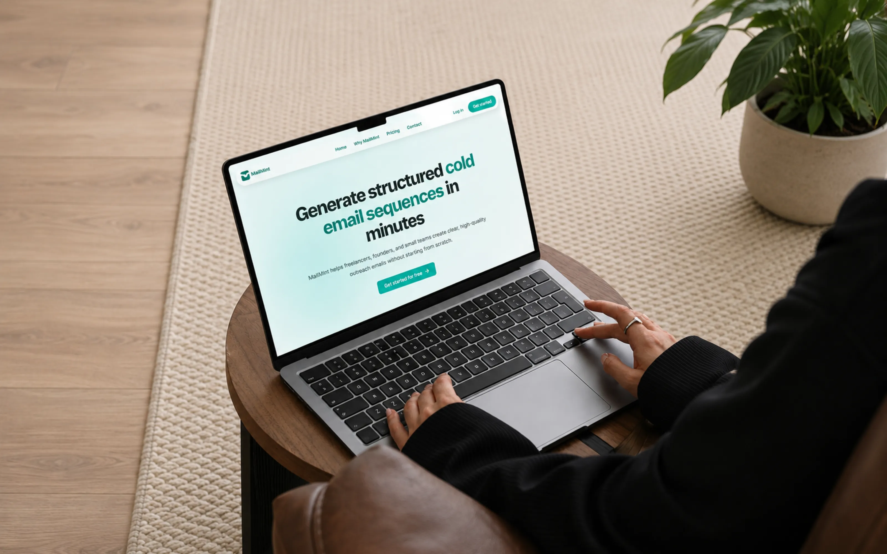
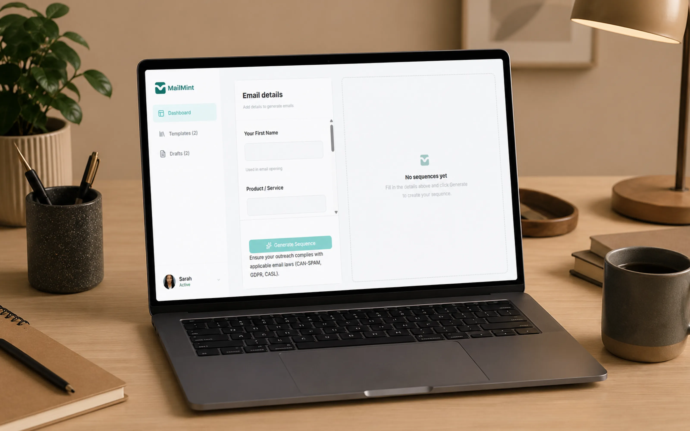
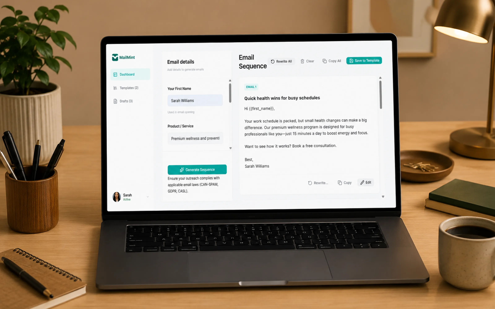
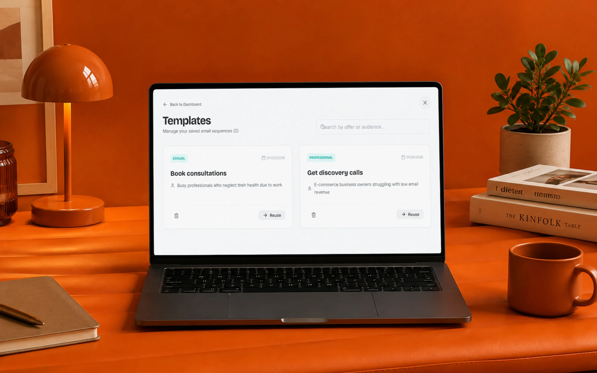

MailMint
MailMint is an AI powered email sequence generation platform that helps businesses create structured cold email campaigns faster. As a core product contributor, I worked across product strategy, UX design, dashboard experience, AI input workflows, documentation, and testing to help shape the product from concept to a functional MVP.

The problem
Many professionals know they need outbound email marketing but struggle with what to write after the first email. Creating effective follow-up sequences is time-consuming, inconsistent, and often results in abandoned outreach efforts. The challenge was to help users quickly generate structured email sequences without staring at a blank page or spending hours writing emails manually.
My role
Product Engineer & Product Builder. I contributed across product strategy, UX design, product documentation, feature planning, implementation planning, testing, iteration, and dashboard experience design. I was one of the core contributors responsible for helping move the product from concept to a functional MVP.
The key decision
The biggest challenge wasn't generating emails with AI — it was collecting enough context to generate useful outputs without overwhelming users with a complicated setup process. Many AI writing tools ask for too little information and produce generic content, while others ask for so much that users abandon the process before generating anything.
I helped shape a streamlined input experience that balanced both sides: collecting key campaign details while keeping the workflow simple enough for users to move from idea to generated sequence quickly. This decision influenced the product structure, which is why the experience centered on generation first rather than forcing users through multiple setup and configuration steps before seeing value.

The workspace where users generate, review, and manage their email sequences.

An AI generated email sequence, ready to review and refine.

Saved templates and drafts, organized for reuse.
What I built
- AI email sequence generation experience — structuring the workflow from campaign input to generated email output
- Dashboard and email workspace — where users generate, review, and manage email sequences
- Drafts and Templates/Library system — preserving unfinished work and organizing generated sequences
- Product documentation, PRDs, user flows, and implementation planning that guided the build
- Testing, usability refinement, feature iteration, and Git-based collaboration throughout development
Stack
Figma, React, TypeScript, Supabase, deployed on Vercel. Built with Antigravity (AI-assisted development) and Git/GitHub collaboration. Product work: PRDs, user flows, UX design.
Outcome
Delivered a functional MVP and presented it live during the Product Builder Bootcamp, taking the product from concept to a working solution ready for demonstration and validation.